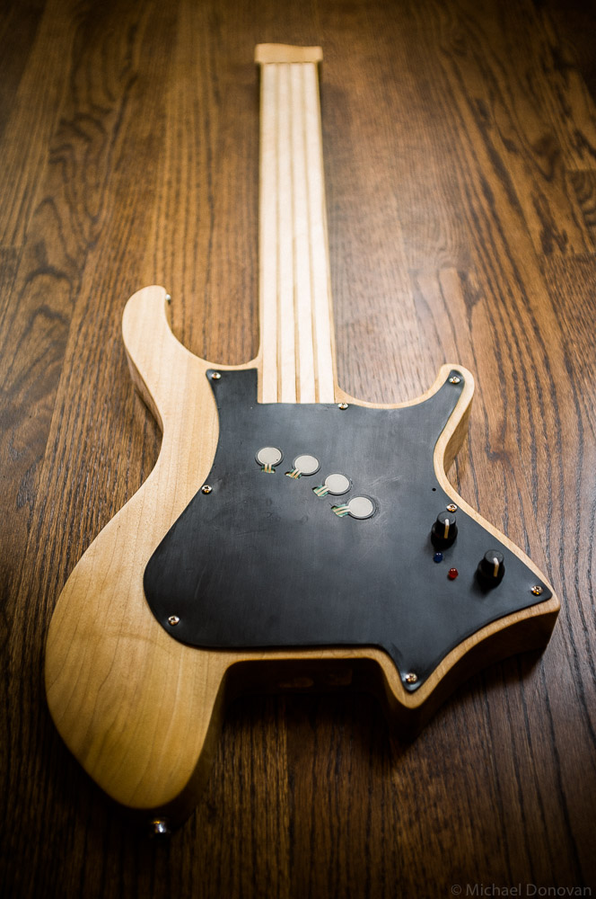
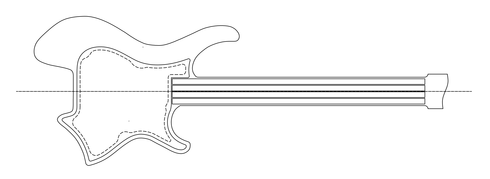
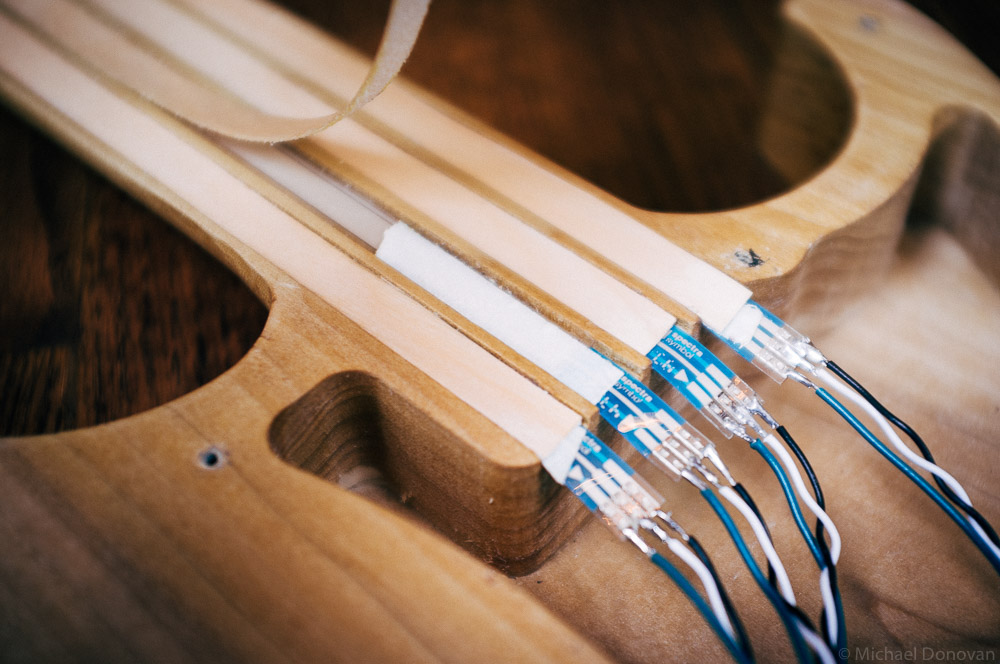
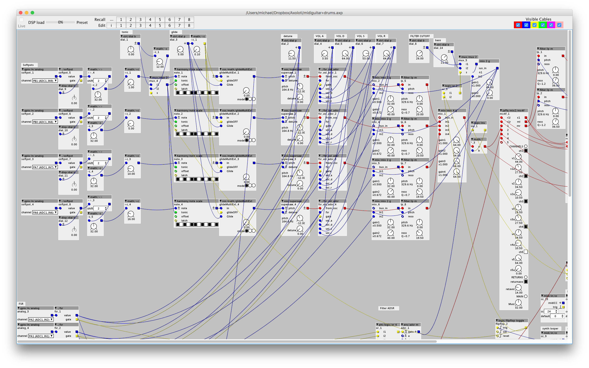

<div class="post">
<p>
    
</p>
<p style="margin-top: 20px;"> </p>
<h1 id="title">Synth Guitar</h1>
<ul class="contact-list">
    <li>Michael Donovan</li>
    <li>
        <a href="mailto:{{ site.email }}">{{ site.email }}</a>
    </li>
    <li>Northwestern University</li>
    <li>EECS397: Digital Luthier</li>
    <li>Prof. Bryan Pardo</li>
</ul>

<h1>Intro</h1>
<p>The goal of this project is to create a digital interface for guitarists that combines the familiar interface of
the guitar with expanded expressive capabilities and the wide timbral range of a digital synthesizer. </p>
<p>Most existing controllers
for synthesizers and digital instruments are based on piano-style keyboards which, for someone who is primarily a guitarist,
is not the most intuitive interface. SynthGuitar provides an interface that is instantly familiar to a guitarist while also
offering an expanded range of expressive and tonal possibilities.</p>
<h1 id="hardware">Hardware</h3>
<p><a href="https://www.axoloti.com/product/axoloti-core/">Axoloti Core,</a>
a development board designed for synthesizer applications, handles sensor input as well as synthesis. Using Axoloti allows
the instrument to be completely self contained and untethered from a computer or external hardware synthesizer to handle
sound synthesis unlike many other similar controllers.</p>

<h2 id="sensors">Sensors</h2>
<p>Primary input is handled through four 500mm <a href="http://www.spectrasymbol.com/product/thinpot/">ThinPots</a>
and four force sensitive resistors. The ThinPots act as "strings" - finger position on each thinpot is used to control the
pitches of each of four oscillators. The pitches of each string can be quantized to an arbitrary scale or can be continuous to allow violin-like
pitch expressivity. By combining quantized pitch with a short glide effect, the player can achieve a legato sound reminiscent of a 
fretless stringed instrument while always landing on a correct pitch. The four force sensitive resistors are used to control the volume of each oscillator as well as the cutoff
of a lowpass filter. Pressing on an FSR triggers the sound of the corresponding "string". Playback continues until pressure
is removed. Varying the pressure applied to the FSR varies the cutoff of the filter, adding an additional dimension of expressivity.</p>

<h2 id="body">Design &amp; Construction</h3>
<figure>
    
    <figcaption style="text-align: center;"><i>View CAD file at <a href="http://github.com/michaeldonovan/SynthGuitar/">github.com/michaeldonovan/SynthGuitar</a></i></figcaption>
</figure>
<p>The body of the instrument builds upon existing ergonomic electric guitar designs and is designed to offer multiple comfortable
    playing positions depending on player preference. The body is made from a single piece of poplar. This combined with
    the small body and large electronics cavity mean that the entire instrument is extremely light, weighin in at just
    under 3 lbs. This further contributes to the overall ergonomics of the instrument by minimizing strain on the player's
    back and shoulder.</p>
<p>
    
</p>
<p style="margin-top: 20px;"> </p>

<p>The four ThinPots are mounted in recessed channels in the neck and covered by thin strips of wood veneer edge
    banding. This creates a cleaner and more consistent aesthetic for the neck as well as a smoother feel under
    the player's fingers than the plastic of the ThinPots.
</p>

<h2 id="software">Software</h3> 
<figure>
    
    <figcaption style="text-align: center;">
        <i>The Axoloti patch</i>
    </figcaption>

</figure>
<p>The Axoloti patch includes two modes: a four-voice polyphonic supersaw synthesizer and a basic drum mode. Modes
can be switched with a MIDI CC message recieved over the USB host port on the Axoloti. In the synth mode, the patch provides controls for pitch glide, 
an ADSR envelope to control the gain of each oscillator as well as independent lowpass filters on each string.A basic reverb effect can be applied to both the synth and drums.The patch also contains a ~5s looper that can record separate loops for the synth and drums. Looper controls are handled via MIDI CC messages. </p>
<p><a href="https://github.com/michaeldonovan/SynthGuitar/tree/master/axoloti_patches">View patches on GitHub</a></p>

<h1 id="demo">Demo</h1>
<div class="center>
<iframe width="640" height="360"  src="https://www.youtube.com/embed/BJTaSTCVjts" frameborder="0" allow="encrypted-media" allowfullscreen></iframe>
</div>

<h1 id="future work">Future Work</h1>
<p><b>Software:</b> The current Axoloti patch is very basic, with only supersaw oscillators available. Adding selectable oscillator types would go a
    long way towards expanding the tonal pallete of the instrument. Similarly, adding additional footswitchable effects such as delay
    or modulation would add a lot of value. 
</p>
<b>Hardware:</b> While the FSRs provide a good amount of expressive capabity, adding additional sensors could expand the creative possibilities even further. 
A joystick located under the player's thumb, for instance, could be used to control a filter or a vibrato effect. Adding accelerometer could also be interesting,
potentially allowing the player to modulate a parameter by shaking or tilting the instrument. This would have the added benefit of increasing the visual interest of
the performance.
<p>

</p>
<h1 id="gallery-title">Gallery</h1>
</div>
{% include gallery-layout.html gallery=site.data.galleries.gallery id_number=1 %}

